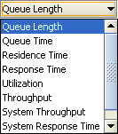

Define Performance Indices
_________________
Performance Indices are selected using the Performance Indices tab.
You can choose any subset of indices from the list below to be plotted as the model ouput:
Each index is associated with a class and a station and will be computed within a given Confidence Interval and Max Relative Error, both defined on the (0-1) range, by performing the following steps:
1 - Select the index you want to add to the model from this menu:

2 - Click and the index will be added to the panel. Next the index parameters must be set.
3 - Select from the Class menu a single class, or All Classes, for which the index must be computed.
4 - Select the Station for which the index must be computed from Station menu. In case of system wide indices, namely, System Throughput and System Response Time, this option is not available.
5 - Double click on the values to modify the default values for the Confidence Interval size of the solution and for the Max Relative Error of the greatest sample error, if you want more/less accurate results.
6 - Repeat these steps for all the indices you want to include in the model output.
NOTE: erroneous parameter settings will be detected only when the simulation is started, raising a warning or an error message.